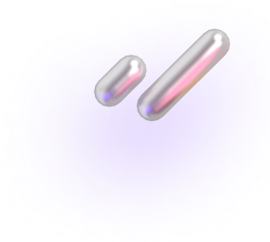
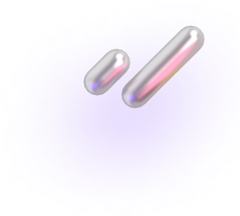

Вступайте
в клуб
Самокатов
в клуб
Самокатов
Купите абонемент, чтобы стать
частью клуба в новом сезоне–2024.
8 месяцев за 499 ₽
Стать частью клуба
частью клуба в новом сезоне–2024.
8 месяцев за 499 ₽
3190 ₽


 
